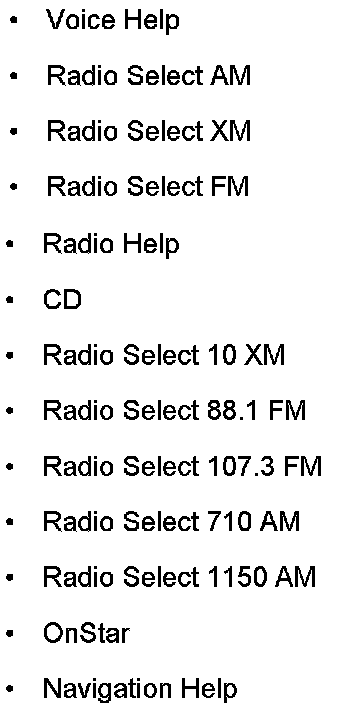
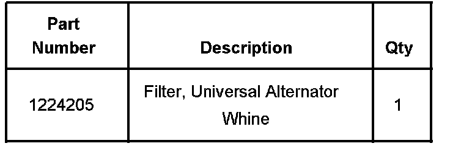
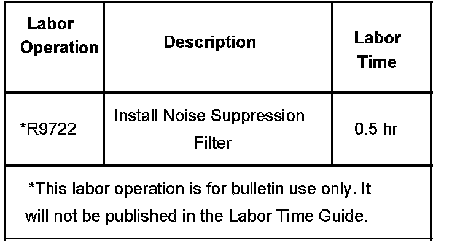

Navigation System - Voice Recognition System Inoperative
Bulletin No.: 06-08-46-004Date: August 01, 2006
TECHNICAL
Subject:
Navigation Radio Voice Recognition Is Inoperative, May Not Follow Customer Command or May Not Recognize Customer's Voice (Follow Diagnostic Procedure)
Models:
2007 Cadillac Escalade Models
2007 Chevrolet Avalanche, Suburban, Tahoe
2007 GMC Yukon Models
with Navigation Radio (RPOs UE1, UVB or U3U)
Condition
Some customers may comment on any or all of the following concerns:
^ The voice recognition system is operating at a degraded performance.
^ The voice recognition system is inoperative.
^ The voice recognition system may not follow the customer's commands.
^ The voice recognition system may not recognize the customer's voice.
Cause
This condition may be caused by electrical noise on the Vehicle Communication Interface Module (VCIM or OnStar(R)) module battery feed wire being passed to the microphone output pins of the radio.
Correction
Technicians are to use the following procedure to diagnose and repair this customer concern:
1. Check for any current microphone Diagnostic Trouble Codes (DTCs) within the VCIM. If a current code is present, address the code using normal diagnostics in SI.

2. Test the commands shown using the radio voice recognition system with the vehicle running, windows up, and the Heating, Ventilation and Air Conditioning (HVAC) blower off. The radio should repeat each command when spoken and then the radio should perform the command. When using a help command, the radio will say all the commands that are available for a given section.
3. Retest the voice recognition system with the engine off and the ignition in the ACCESSORY position, all windows up, and the HVAC blower off. Use the same commands as listed above.
4. If the voice recognition system performance improves when the engine is not running versus with the engine running, install a noise suppression filter in the battery feed wire of the VCIM.
Important:
The noise suppression filter is polarity sensitive. The filter is designed to be most effective when the end with the capacitor ground is connected towards the source of the electrical noise. Install the filter in this polarity first. If the noise level is still not satisfactory, try disconnecting the capacitor ground. In some cases if the first installation does not correct the noise, try reversing the filter polarity (removing the filter, turning it end for end and then reinstalling it) and grounding the capacitor lead.
5. Install the noise suppression filter, P/N 1224205, inline in circuit 3240 a few centimeters/inches from the VCIM. Circuit 3240 is a Red/White wire located in cavity 15 of connector C1 of the VCIM. Connector C1 is a 16 cavity natural colored connector. The filter package has a yellow and a black wire at one end and a single yellow wire at the opposite end. Install the side with the two wires toward the "INFO" fuse (away from the VCIM), installing the yellow wire in circuit 3240 and the black wire to ground. Then install the single yellow wire end towards the VCIM.

Parts Information
Warranty Information

For vehicles repaired under warranty, use the table.

Disclaimer